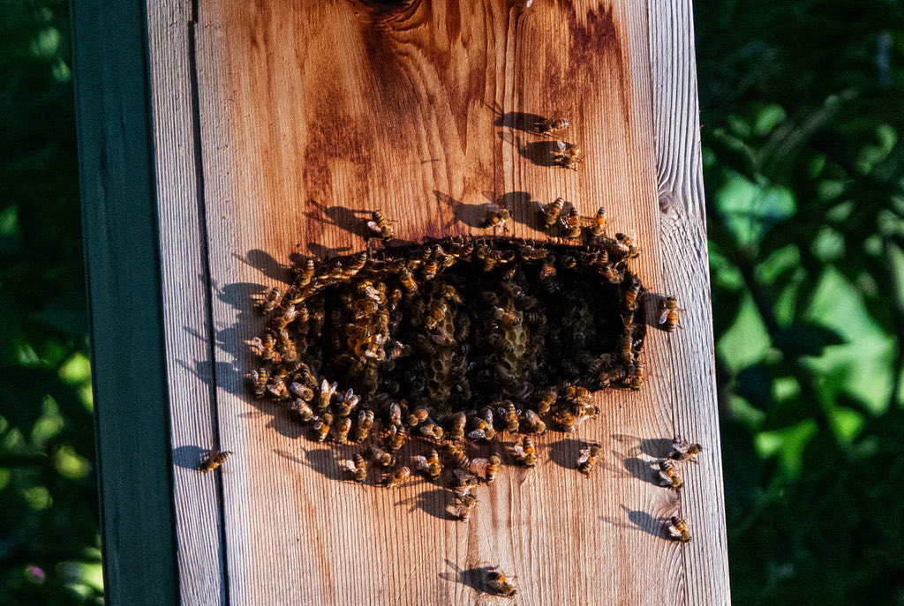

- A single colony can hold 50,000 to 80,000 workers, all daughters of one queen. That queen may lay up to 2,000 eggs a day at peak season — more than her own body weight in eggs over her lifetime.
- The waggle dance is one of the animal kingdom's most remarkable communication systems. A returning forager traces a figure-eight on the comb, waggling her abdomen on the straight run to encode both the direction and distance of a food source relative to the position of the sun.
- Worker bees are all sterile females. A newly emerged worker spends her first few weeks cleaning cells, nursing larvae, and building comb — foraging comes only in the last weeks of her short life, when the flight muscles that power it will literally wear out.
- The western honey bee is not native to the Americas. Every honey bee you see in Florida traces its ancestry to European (and in some areas Africanized) stock brought here by beekeepers beginning in the early 1600s.
Workers are about 0.4 to 0.6 inches long — roughly the size of a watermelon seed. Queens are noticeably longer, 0.7 to 0.8 inches, with an elongated abdomen that extends well past the wingtips at rest. Drones (males) are stockier than workers, with dramatically large compound eyes that meet at the top of the head.
Generally brown to orange-brown with alternating dark and pale (yellowish to amber) bands across the abdomen. The thorax is covered in dense tan or golden-brown hairs. Overall color varies somewhat by subspecies — Italian bees tend toward brighter amber, while Carniolan bees are darker and grayer — but the banded abdomen is consistent.
Foraging workers often carry conspicuous balls of compacted pollen on the corbiculae (pollen baskets) on their hind legs. These can be yellow, orange, white, or even greenish depending on the plant visited, and are one of the easiest field marks for a forager in flight.
Bumble bees are larger and rounder, with a fuzzy appearance and often a yellow-and-black pattern. Sweat bees and other small native bees are considerably smaller. Yellowjackets and paper wasps are similar in size but have a narrow waist, much less body hair, and hold their wings flat or folded lengthwise at rest.
The familiar buzz is produced by the rapid vibration of the flight muscles, not the wings directly — honey bees can buzz with wings folded. Individual foragers at flowers produce a soft, steady hum. A disturbed or defensive colony is considerably louder, with a higher-pitched, urgent tone that experienced beekeepers recognize immediately. Inside the hive, queens produce distinct piping calls — high-pitched tooting from a newly emerged queen and muffled quacking from queens still in their cells — used in the competitive process of establishing a new queen after swarming.
Look for a medium-sized, hairy, banded brown-and-amber bee working flowers methodically, often pausing long enough at each bloom to pack pollen onto its hind legs. Honey bees tend to be unhurried and focused compared to the darting flight of wasps. The pollen-laden hind legs are a reliable field mark on foragers. At rest on a flower, the broad hairy thorax and the distinctly banded abdomen separate this species from wasps and most other bees in the park.
Workers collect nectar and pollen from flowering plants, converting nectar into honey for long-term colony energy storage and using pollen as the colony's protein source for raising larvae. Individual foragers may visit hundreds of flowers on a single trip. Colonies also gather propolis — a sticky resin from plant buds — used to seal gaps and varnish the hive interior, and collect water for cooling and diluting stored honey.
Any flowering plant in the park is a reasonable starting point, particularly those with open, accessible blooms. Watch for workers moving methodically from flower to flower, often with visible pollen loads on their hind legs. Bees are especially concentrated on mass-flowering shrubs and herbs. Listen as well — the steady hum of foraging workers is often the first clue before you spot them.
Year-round in Manatee County. Because Florida winters are mild and some plants flower in every month, foraging workers are active on warm days throughout the year. Peak foraging activity tracks peak bloom: late winter through spring and again in fall. Workers forage during daylight hours, typically ramping up mid-morning after temperatures rise and tapering off in late afternoon.
Foragers visiting flowers in the park are focused on their work and pose little risk if left alone. Observe them closely — they are remarkably tolerant of a slow, quiet approach. Avoid swatting, which triggers a defensive response. Give any swarm or established hive a wide berth and alert park staff. Never disturb a known nest.
- © Rob Carr (CC-BY-NC), via iNaturalist